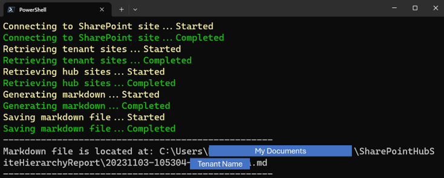

Export of the Hierarchy of Hub Sites
Summary
SharePoint allows to associate a hub site with another hub site. This script exports the SharePoint site hierarchy into a Markdown file to visualize the hub sites and its associated sites. It helps to understand the structure of SharePoint.

The following is a sample of the output markdown:
# SharePoint Sites in tenant [contoso]
## Hub Sites and Sites Associated with Hub Sites
Here are the hub sites and the sites associated with the hub sites. Hub sites are shown in bold.
- **[Hub Site A](https://contoso.sharepoint.com/sites/HubSiteA)**
- [Site 1](https://contoso.sharepoint.com/sites/Site1)
- [Site 2](https://contoso.sharepoint.com/sites/Site2)
- **[Hub Site B](https://contoso.sharepoint.com/sites/HubSiteB)**
- [Site 3](https://contoso.sharepoint.com/sites/Site3)
- [Site 4](https://contoso.sharepoint.com/sites/Site4)
- **[Hub Site C](https://contoso.sharepoint.com/sites/HubSiteC)**
- [Site 5](https://contoso.sharepoint.com/sites/Site5)
- [Site 6](https://contoso.sharepoint.com/sites/Site6)
- **[Hub Site D](https://contoso.sharepoint.com/sites/HubSiteA)**
- [Site 7](https://contoso.sharepoint.com/sites/Site7)
- [Site 8](https://contoso.sharepoint.com/sites/Site8)
## Sites that are not Hub Sites and are not Associated with any Hub Site
Here are the sites that are not hub sites and are not associated with any hub site.
- [Site 9](https://contoso.sharepoint.com/sites/Site9)
- [Site 10](https://contoso.sharepoint.com/sites/Site10)
The markdown file is created in the "SharePointHubSiteHierarchyReport" folder in MyDocuments.

Note
- To run this script, it is required to be able to access the SharePoint Tenant Administration site.
- Subsites are not exported.
# Target tenant name
$tenantName = '<Tenant Name>' # e.g. contoso
# Constants
$noHubSiteId = '00000000-0000-0000-0000-000000000000'
$adminUrl = "https://$tenantName-admin.sharepoint.com/"
$exportFolderName = 'SharePointHubSiteHierarchyReport'
$exportFolderPath = Join-Path ([Environment]::GetFolderPath('MyDocuments')) $exportFolderName
$timeStamp = (Get-Date).ToString('yyyyMMdd-HHmmss')
$markdownFilePath = Join-Path $exportFolderPath "$timeStamp-$tenantName.md"
# Function: Generate Markdown
function GenerateMarkdownForHubSite {
param (
$hubSite,
$level,
$hubSites,
$tenantSites
)
$indent = " " * ($level - 1)
$hubSiteInfo = $tenantSites | Where-Object { $_.Url -eq $hubSite.SiteUrl }
$hubTitle = $hubSiteInfo.Title ? $hubSiteInfo.Title : $hubSiteInfo.Url
$markdown = "$indent- **[$hubTitle]($($hubSiteInfo.Url))**`r`n"
$childSites = $tenantSites | Where-Object { $_.HubSiteId -eq $hubSite.SiteId -and $_.Url -ne $hubSite.SiteUrl }
foreach ($childSite in $childSites) {
$title = $childSite.Title ? $childSite.Title : $childSite.Url
$markdown += "$indent - [$title]($($childSite.Url))`r`n"
}
$childHubSites = $hubSites | Where-Object { $_.ParentHubSiteId -eq $hubSite.SiteId }
foreach ($childHubSite in $childHubSites) {
$markdown += (GenerateMarkdownForHubSite $childHubSite ($level + 1) $hubSites $tenantSites)
}
return $markdown
}
try {
# Create the Data Export Folder
if (-not (Test-Path $exportFolderPath -PathType Container)) {
Write-Host "Creating Data Export Folder...Started" -ForegroundColor Yellow
New-Item -Path $exportFolderPath -ItemType Directory -Force -ErrorAction Stop
Write-Host "Creating Data Export Folder...Completed" -ForegroundColor Green
}
# Connect to SharePoint site
Write-Host "Connecting to SharePoint site...Started" -ForegroundColor Yellow
Connect-PnPOnline -Url $adminUrl -Interactive -ErrorAction Stop
Write-Host "Connecting to SharePoint site...Completed" -ForegroundColor Green
# Get tenant sites
Write-Host "Retrieving tenant sites...Started" -ForegroundColor Yellow
$tenantSites = Get-PnPTenantSite -ErrorAction Stop
Write-Host "Retrieving tenant sites...Completed" -ForegroundColor Green
# Get hub sites
Write-Host "Retrieving hub sites...Started" -ForegroundColor Yellow
$hubSites = Get-PnPHubSite -ErrorAction Stop
Write-Host "Retrieving hub sites...Completed" -ForegroundColor Green
# Generate Markdown
Write-Host "Generating markdown...Started" -ForegroundColor Yellow
$markdownText = @()
$markdownText += "# SharePoint Sites in tenant [$($tenantName)]`r`n"
# Hub Sites and Sites Associated with Hub Sites
$markdownText += "## Hub Sites and Sites Associated with Hub Sites`r`n"
$markdownText += "Here are the hub sites and the sites associated with the hub sites. Hub sites are shown in bold.`r`n"
$parentHubSites = $hubSites | Where-Object { $_.ParentHubSiteId -eq $noHubSiteId }
foreach ($parentHubSite in $parentHubSites) {
$markdownText += (GenerateMarkdownForHubSite $parentHubSite 1 $hubSites $tenantSites)
}
# Hub Sites and Sites Associated with Hub Sites
$markdownText += "## Sites that are not Hub Sites and are not Associated with any Hub Site`r`n"
$markdownText += "Here are the sites that are not hub sites and are not associated with any hub site.`r`n"
$standaloneSites = $tenantSites | Where-Object { $_.HubSiteId -eq $noHubSiteId }
foreach ($standaloneSite in $standaloneSites) {
$title = if ($standaloneSite.Title) { $standaloneSite.Title } else { $standaloneSite.Url }
$markdownText += "- [$title]($($standaloneSite.Url))"
}
Write-Host "Generating markdown...Completed" -ForegroundColor Green
# Save the Markdown file
Write-Host "Saving markdown file...Started" -ForegroundColor Yellow
$markdownText -join "`r`n" | Out-File -FilePath $markdownFilePath -Encoding UTF8 -ErrorAction Stop
Write-Host "Saving markdown file...Completed" -ForegroundColor Green
# Display successful file save message
Write-Host "-".PadRight(50, "-")
Write-Host "Markdown file is located at: $markdownFilePath"
Write-Host "-".PadRight(50, "-")
}
catch {
Write-Error "Error message: $($_.Exception.Message)"
}
finally {
Disconnect-PnPOnline
}
Check out the PnP PowerShell to learn more at: https://aka.ms/pnp/powershell
The way you login into PnP PowerShell has changed please read PnP Management Shell EntraID app is deleted : what should I do ?
Contributors
| Author(s) |
|---|
| Tetsuya Kawahara |
| Ganesh Sanap |
Disclaimer
THESE SAMPLES ARE PROVIDED AS IS WITHOUT WARRANTY OF ANY KIND, EITHER EXPRESS OR IMPLIED, INCLUDING ANY IMPLIED WARRANTIES OF FITNESS FOR A PARTICULAR PURPOSE, MERCHANTABILITY, OR NON-INFRINGEMENT.